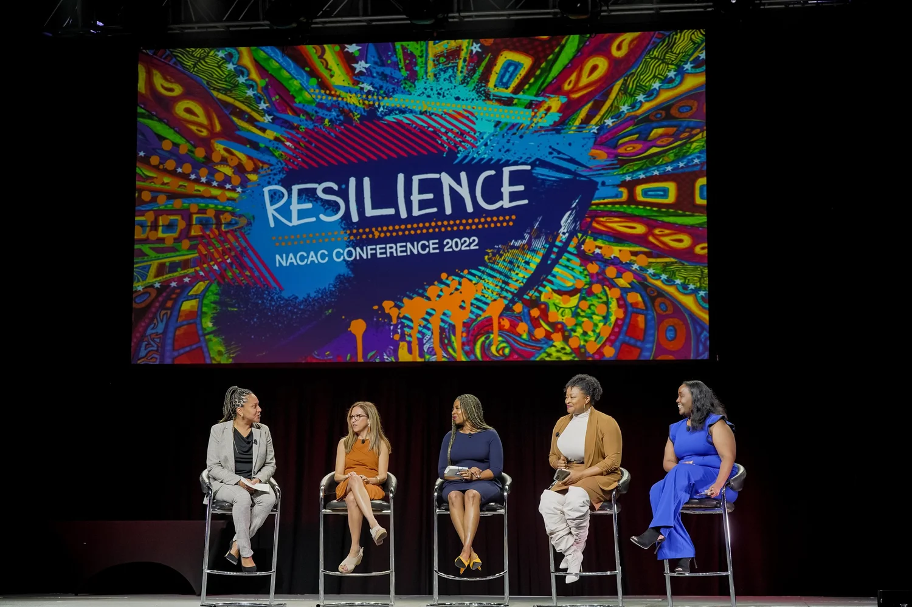

Speaking
Keynotes & Speeches

- National Association for College Admission Counseling Conference, Main Stage Panel Speaker, 2022
- University of Redlands, The Future of Education, Keynote Speaker, 2026
- EducationQuest Nebraska: Supporting Marginalized Youth with Postsecondary Access Virtual Keynote, 2025
- University of Redlands Class of 2024 Students of Color Commencement Speaker, 2024
- Soroptimist International-Corona, Dreams & Decisions Keynote Speaker, Perseverance: Bouncing Back, 2024
- New York State School Counselor Association Conference, 2024 (Welcome Speech)
- San Jacinto Leadership Academy National Honor Society Induction Faculty Speaker, 2024
- Indiana School Counselor Association Conference, 2023 (Welcome Speech)
- Lone Star State School Counselor Association Conference, 2023 (Welcome Speech)
- California Association of School Counselors Conference, 2022 (Welcome Speech)
- Nebraska School Counselor Academy Conference, 2022 (Welcome Speech)
- American School Counselor Association Conference Main Stage State Roll Calls (Atlanta, GA 2023; Kansas City, MI 2024; Long Beach, CA 2025)
- California Baptist University Senior Class President Commencement Speech, 2001